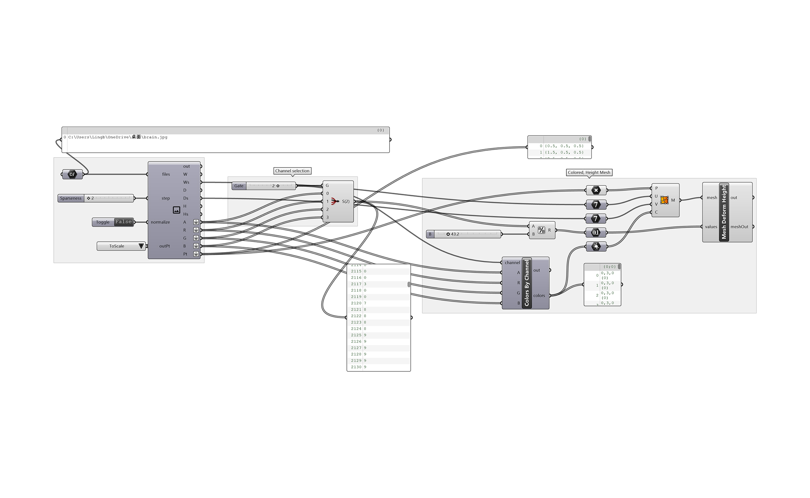

Multi-Material 3D printing
"In this assignment, we studied the technological evolutions of computerized tomography (CT). Despite the modern advances that have transformed CT from 2D to multi-dimensional visualizations, 2D CT scans still remain as the most professionally favored approaches for medical analysis and diagnosis. However, these highly professionalized visualizations have made it difficult for patients to understand their disease fundamentals.
Lingbo Li, Muqing Bai
Evolution of Computerized Tomography (CT)

Fantastic Voyage (1966)
With this exercise, we decided to leverage multi-material printing techniques to prototype visually identifiable mutations in 3D. This lays the foundation for the mesh-based gaming environment of the final educational project that aims to turn medical disorders in human bodies into a landscape of 3D objects for players to interact with."
Overall Workflow
Part I : Initial Test_Marching Square Generations
MRI Head Brain Normal
- Preparing the Grid and Extract Point Brightness
- Modified Approach with Optimized Mesh
step 1: Generate an image grid
step 2: Detect RGB values of each point of the grid
step 3: Creating a point list with RGB values as Z-values
- Physicalization
The resin 3D print that assigns color white to higher color brightness points and black to lower brightness points
Part II : Extrusion-based Geometry Generations for Tumor Detections
A study of CT slices as detections of brain tumors:
Tumors may appear as areas of abnormal shapes and increased or decreased densities compared to surrounding tissues. Irregular borders, areas of necrosis (dead tissue), and evidence of invasion into surrounding tissues are all considered as features for a potential tumor appearance.
- Identifying tumor locations from pixel brightness
step 1: Define pts of brightness as Z-value
step 2: Calcualting the SDF of each point from the center
step 3: Remove peripheral points that represent the skin
step 4: Filter for tumor locations from the rest of the points with a defined heigt value
step 5: Define previously selected points as new centers of circles with a set radius
- Physicalization
3D resin print of the brain with white cylindrical volumes to highlight tumor concentrations
Part III : 3D simulation of a brain tumor

The project aims to build upon previously presented materials to ultimately produce a complete 3D physicalization of brain tumors within a skull from a full stack of CT slices instead of an individual image.